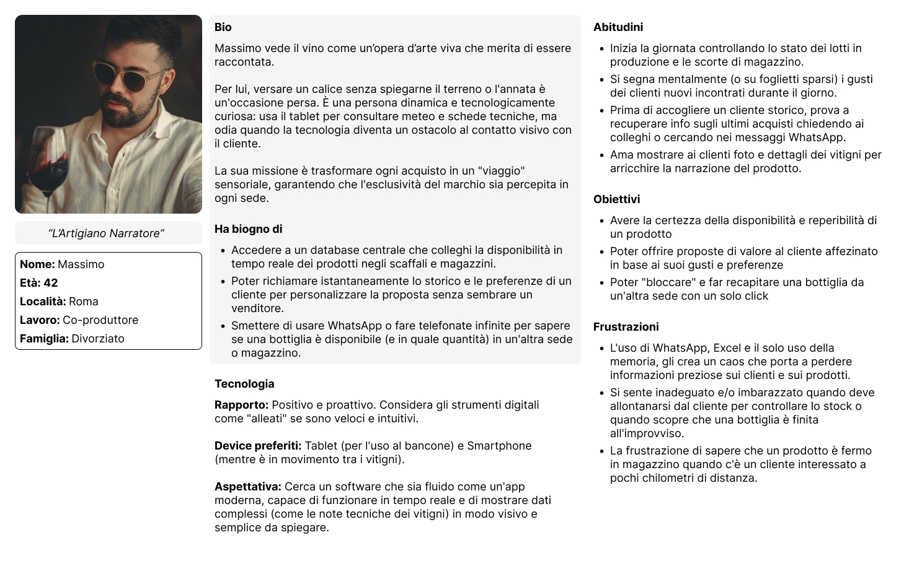
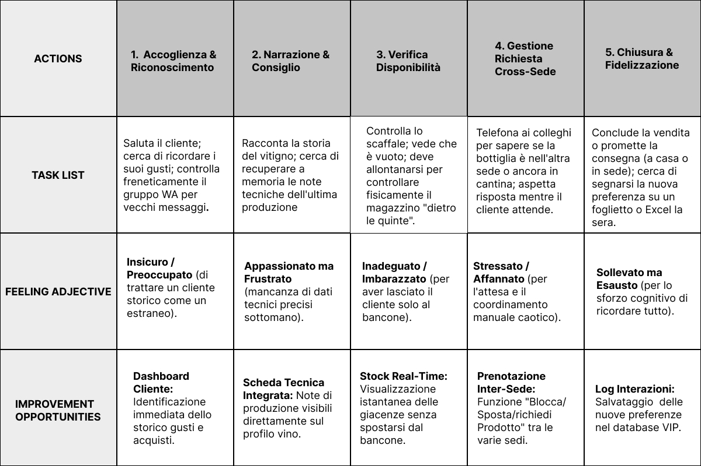
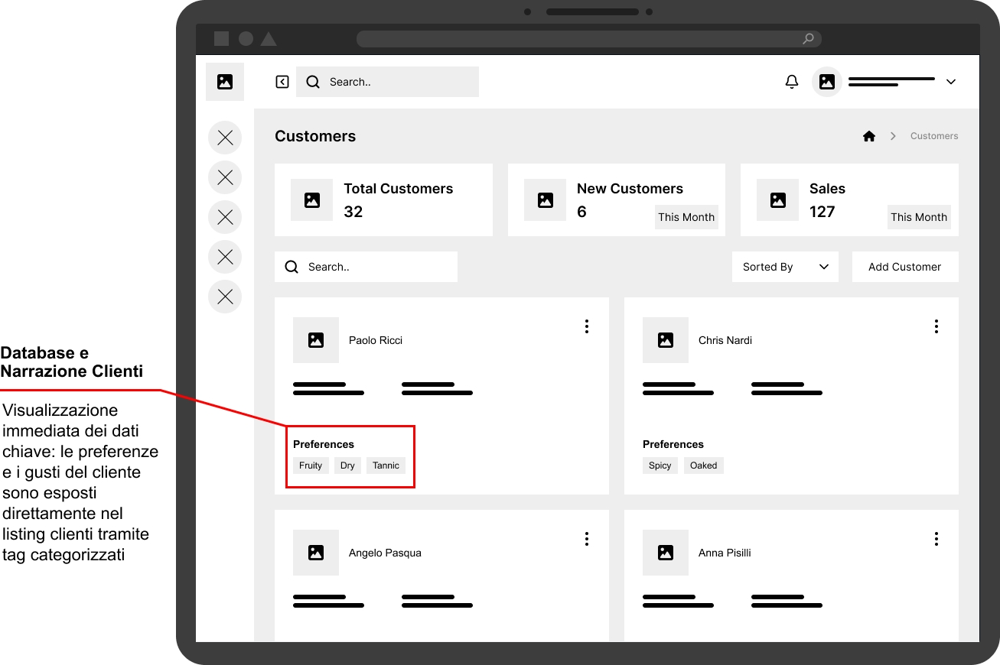
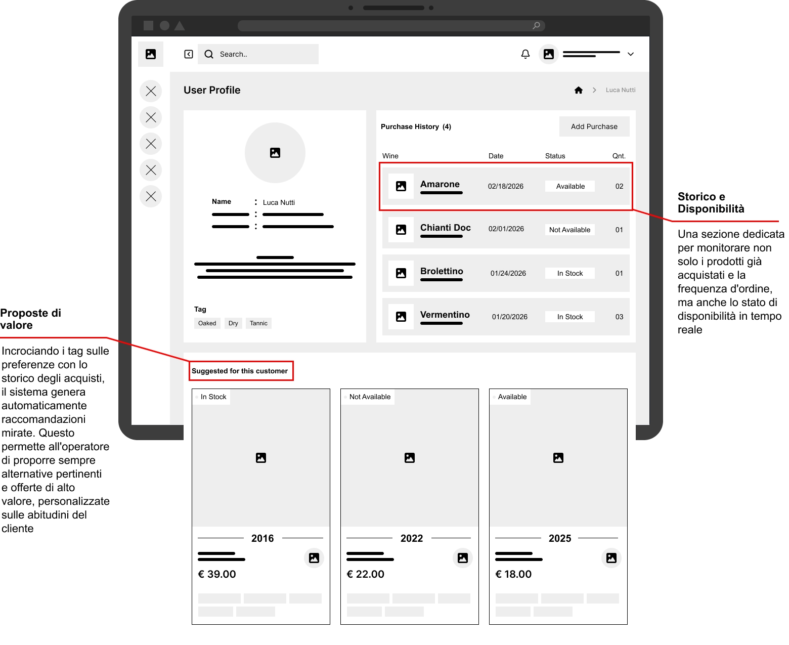
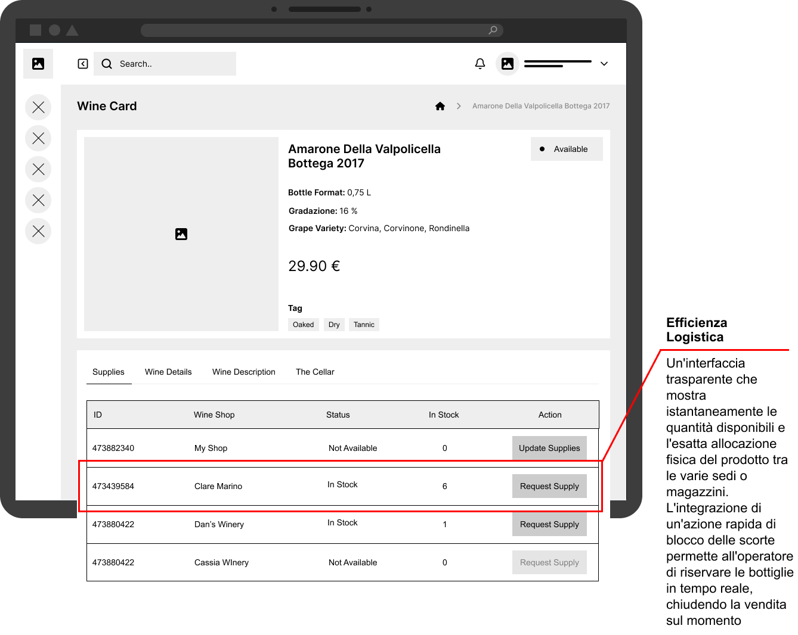

CRM nato con la missione di trasformare la gestione delle cantine in un asset strategico. Esso consente non solo di aver accesso immediato alle informazioni e di gestire le giacenze dei prodotti, ma aiuta il venditore a poter costruire proposte su misura per i propri clienti affezionati.


I continui messaggi, telefonate per info su prodotti e clienti o verifiche fisiche in magazzino, interrompevano il dialogo con il cliente stesso. Questo portava il venditore a non proporre alternative coerenti e di valore.

Eliminare la frammentazione del processo, garantire una gestione in autonomia di prodotti e clienti in modo da regalare a questi ultimi un esperienza personalizzata e di qualità.

UX/UI Lead & Front-End Developer. Ho guidato l'intero ciclo del prodotto: dalla ricerca con gli utenti alla progettazione dell'interfaccia, fino alla traduzione in codice pulito e scalabile

Per comprendere a fondo le dinamiche del settore ho condotto una ricerca sul campo intervistando stakeholders chiave. Per questo progetto, però, ho fatto un ulteriore step: grazie all'esperienza dei progetti precedenti, ho ascoltato anche i clienti finali dei miei utenti. Le supposizioni iniziali portavano ad un gestionale che eliminasse attrito tra le varie cantine, ma conducendo una ricerca approfondita tra i miei utenti e i loro clienti, il progetto si è evoluto da semplice gestionale ad un prodotto che garantisse una qualità relazionale tra venditore e cliente.
Mi identifico come l'artigiano narratore.
Massimo, responsabile di cantina e Customer Experience, ha bisogno di uno strumento interno che gli permetta di riconoscere immediatamente ogni cliente, accedere senza interruzioni alle informazioni rilevanti e allo stato dei prodotti, così da costruire una proposta coerente con i suoi gusti e garantire qualità e continuità alla relazione nel tempo.


Il viaggio di Massimo parte dal momento in cui il suo cliente entra nel locale, è qui che il suo percorso inizia e i suoi ostacoli si manifestano.
Mi interessava capire quale era il percorso, quali le sensazioni e le problematiche che il venditore afforntava quotidianamente quando voleva proporre qualcosa di unico o su misura per il suo cliente.
Mappare questa Journay è stato per me fondamentale per individuare i momenti di massima frizione e trasformarli in opportunità.
Per poter costruire una proposta di valore sono state identificate ed isolate diverse caratteristiche e intuizioni.
Tutto questo è stato fondamentale per determinare infine una porposta di valore. Un esempio concreto è rappresentata dalle features principali sotto una categoria che ho rinominato "Storytelling":
- Storico prodotti: Accesso immediato agli acquisti passati del cliente per comprenderne l'evoluzione dei gusti.
- Tag personalizzati: Indicatori visivi rapidi per mappare gusti e preferenze di ciascun ospite.
- Suggerimenti intelligenti: Un sistema automatico che esegue un merge tra le giacenze attuali della cantina, lo storico e preferenze del cliente per suggerire all'istante l'alternativa perfetta.

wireframe cartacei/digitali & studio d'usabilità
Stile minimale dei wireframe cartacei, il focus era incentrato sulla card vini, listing utenti e scheda vino con annessa tabella giacenze delle varie cantine.


Nel listing principale, ogni singola card dedicata al cliente permette di verificare in modo chiaro e immediato i suoi gusti tramite appositi tag visivi. Questo consente al venditore di avere una panoramica istantanea delle preferenze del cliente.
Nella scheda personale di ciascun utente ci sono due features chiave, i suggerimenti automatici di sistema e lo storico degli acquisti del cliente.
In questa scheda il venditore può formulare proposte coerenti e di valore per il proprio cliente o andare a recpurerare prodotti già acquistati in precedenza. Per offrire un alto livello di qualità ed eliminare la frammentazione, l'utente può verificare facilmente status/disponibilità di ciascun prodotto.


La scheda del vino rappresenta il cuore operativo ma anche emozionale del venditore, oltre che avere informazioni aggiornate sui vitigni e caratteristiche del prodotto, il venditore può verificare in quale cantina/negozio è allocato il prodotto e richiederlo per la propria sede e/o cliente. Qui riduce sensibilimente l'attrito logistico.
Ho strutturato un prototipo interattivo a bassa fedeltà basato su uno scenario d'uso reale. All'utente (il venditore) è stato chiesto di completare un flusso logico ad alto valore relazionale e operativo:
1. Riconoscimento e Identificazione: Individuare il cliente entrato in negozio cercandolo nel listing, verificando istantaneamente i suoi tag di preferenza.
2. Consulenza e Storico: Identificare l'ultimo acquisto effettuato dal cliente per aprire lo storytelling di vendita.
3. Risoluzione della Frizione Logistica: Verificare lo status e la disponibilità del prodotto desiderato. Qualora il vino non fosse presente nel proprio magazzino, controllare la disponibilità negli altri shop, effettuare una richiesta di trasferimento per due unità e farle recapitare nella propria sede.

Tutti gli utenti coinvolti nel test hanno completato con successo il Task richiesto
Ricerca utente: È emerso il desiderio di un sistema di ricerca avanzata che non si limiti al reperimento del dato, ma offra suggerimenti intelligenti durante la digitazione.
Badge giacenze: Dai colloqui post-test è emersa confusione nella distinzione tra gli stati "Available" (disponibile) e "In Stock" (in magazzino).
Distanza: Molto interessante cosa è emerso in fase di selezione della sede per richiedere il prodotto tra sedi, gli utenti hanno espresso la necessità di visualizzare la distanza fisica degli altri shop.
Mockup & Prototipo
Ecco come ho Integrato un sistema di ricerca intelligente, grazie ai suggerimenti durante la digitazione l'utente può trovare il cliente in maniera fluida e veloce


Label migliorate della disponibilità dei vini. Ho compreso l'importanza di una nomenclatura più intuitiva per evitare incertezze durante la fase operativa, utilizzando "Remote Stock" per gicenze in altri magazzini in modo che non si confindesse con "in stock".
Integrata una colonna (inventario) con la distanza dei vari shop, Integrare questo dato permette al venditore di scegliere la cantina di approvvigionamento non solo per giacenza, ma anche per tempistica e praticità di consegna.


Nel prototipo finale ad alta fedeltà l'intero viaggio del venditore prende vita attraverso un'interfaccia fluida, pulita e ottimizzata per l'operatività quotidiana. È possibile apprezzare l'intero flusso senza interruzioni:
1. Ricerca e Identificazione: L'accesso immediato alla scheda personale del cliente direttamente dal listing.
2. Consultazione e Storico: Il controllo intuitivo degli acquisti passati e delle preferenze, supportato da indicatori visivi chiari per lo stato dei prodotti.
3. Azione Logistica Immediata: L'identificazione delle giacenze e la richiesta di trasferimento del prodotto tramite una finestra di dialogo (modal) contestuale.

Frammentazione logistica e del processo: niente più messaggi su WhatsApp, telefonate o verifiche fisiche in magazzino che interrompono il dialogo con il cliente, il che ha portato anche ad una diminuizione del carico cognitivo per il venditore.
Supporta la crescita del business: Capacità di gestire più clienti e più forniture senza perdere qualità relazionale.
Questo progetto ha rappresentato un importante momento di evoluzione professionale, permettendomi di capitalizzare l'esperienza delle mie esperienze passate. La vera svolta è stata il raggiungimento di un doppio livello di empatia: non mi sono limitato a intervistare gli stakeholder chiave e i venditori, ma ho voluto ascoltare direttamente i loro stessi clienti. Questo approccio mi ha permesso di progettare non un semplice software, ma un ponte relazionale.
Cosa farei meglio (Next Steps): Il design non è mai davvero finito. Analizzando i colloqui post-lancio e riflettendo sulle possibili iterazioni del prodotto, ho individuato un'area di miglioramento cruciale: la gestione degli allergeni. Se dovessi sviluppare la release successiva, integrerei un sistema di tag dedicato non solo alle preferenze di gusto, ma anche a intolleranze e allergeni. Nel settore del vino, questa feature rappresenterebbe un pilastro fondamentale sia per la sicurezza dell'ospite sia per elevare ulteriormente il livello di cura e personalizzazione del servizio.